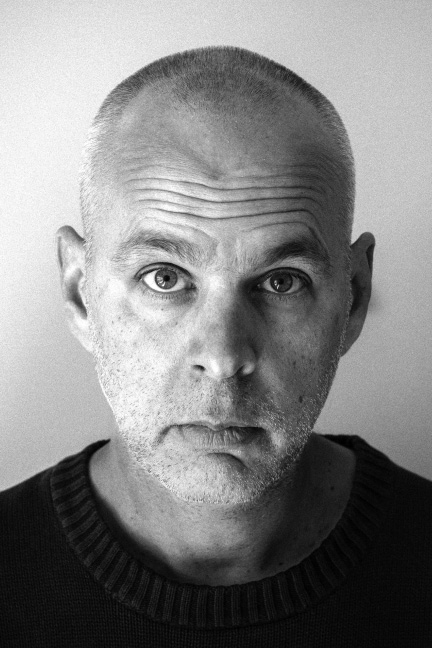

Ken Kocienda
KEN KOCIENDA was a software engineer and designer at Apple for over fifteen years. After graduating from Yale, he fixed motorcycles, worked in the editorial library of a newspaper, taught English in Japan, and made fine art photographs. Eventually, he discovered the Internet, taught himself computer programming, and made his way through a succession of dot-com-era startups before landing at Apple in 2001, where he worked on the software teams that created the Safari web browser, iPhone, iPad, and Apple Watch. Ken lives in San Jose, California, with his wife.
You can sign up for email updates here.